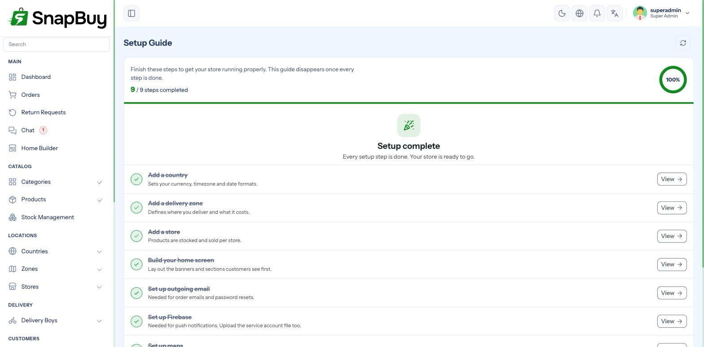

Setup Guide — the first nine steps
A freshly installed SnapBuy panel is empty. The apps and the web portal will load, but they will show nothing, because there is no country, no delivery zone, no store and no home layout yet.
The panel guides you through this with a Setup Guide widget in the sidebar. It tracks nine steps, shows a completion ring, and hides itself once all nine are done.

The nine steps
| # | Step | Where | Why it matters |
|---|---|---|---|
| 1 | Add a Country | /countries/create | Sets currency, and the countries you deliver in |
| 2 | Add a Zone | /zones/create | The geographic area you actually deliver to |
| 3 | Add a Store | /stores/create | Products belong to a store; without one nothing can be sold |
| 4 | Build the Home Layout | /home_builder | Controls what the app and website home screen show |
| 5 | Configure SMTP | /settings/smtp | Order emails, password resets, OTP by email |
| 6 | Configure Firebase | /settings/firebase | Login, push notifications, real-time updates |
| 7 | Configure Maps | /settings/api | Address selection, delivery distance, zone drawing |
| 8 | Configure Chat | /settings/chat | Live chat between customers, delivery boys and admin |
| 9 | Set up Cron | Server | Reminders, queued jobs, scheduled publishing |
Follow them in this order. Later steps depend on earlier ones — you cannot create a store without a zone, and you cannot create a zone without a country.
How each step is detected
The Setup Guide does not use checkboxes you tick yourself. It inspects your data and configuration, so a step only completes when it is genuinely done.
| Step | Considered complete when |
|---|---|
| Country | At least one country exists |
| Zone | At least one zone exists |
| Store | At least one store exists |
| Home Builder | At least one home layout exists |
| SMTP | smtp_host, smtp_port and smtp_from_mail are all filled |
| Firebase | apiKey, projectId, messagingSenderId, appId are filled and config/firebase.json exists on the server |
| Map | Provider is OpenStreetMap (needs no key), or provider is Google and both the Map key and Places key are filled |
| Chat | Reverb or Pusher is selected and its credentials are all present |
| Cron | The scheduler heartbeat is less than 150 seconds old |
A step that will not tick off
If a step stays red after you have configured it, the check found something missing. The two that catch people out:
- Firebase — the web keys are saved but the service account JSON was never uploaded, so
config/firebase.jsondoes not exist. - Map — the provider is set to Google but only the Map key was entered; the Places key is a separate field and is also required.
Step-by-step
Each step has its own page with the full walkthrough:
- Countries & Currency
- Delivery Zones
- Stores
- Home Builder
- SMTP / Email Settings
- Firebase Settings
- Map & API Keys
- Chat Settings (Reverb / Pusher)
- Cron Job Setup
Recommended order beyond the nine
Once the Setup Guide is complete, the store works but is not yet ready to sell. Continue with:
- Payment Gateways — customers cannot pay online until one is live
- General Settings — store name, logo, currency display, timezone
- App Settings — minimum order value, delivery charges, order behaviour
- Catalogue — categories, then brands and attributes, then products
- Login Settings and SMS Settings — how customers sign in
- Notification & Email Templates — wording customers actually receive
- Roles & Permissions — before you hand access to staff
Reopening the Setup Guide
Once every step is complete, the sidebar widget disappears. You can still open it at any time from Setup Guide in the menu, or by visiting /setup_guide.
Previous: ← Cron Job Setup